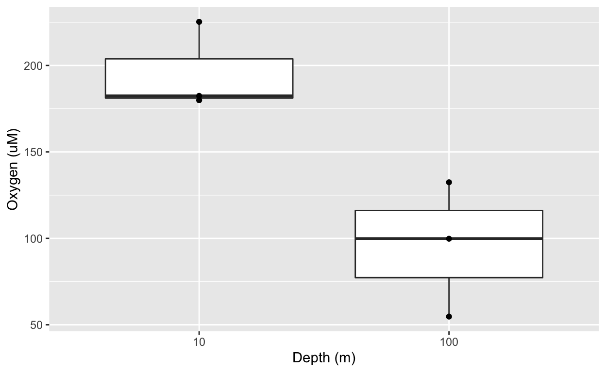
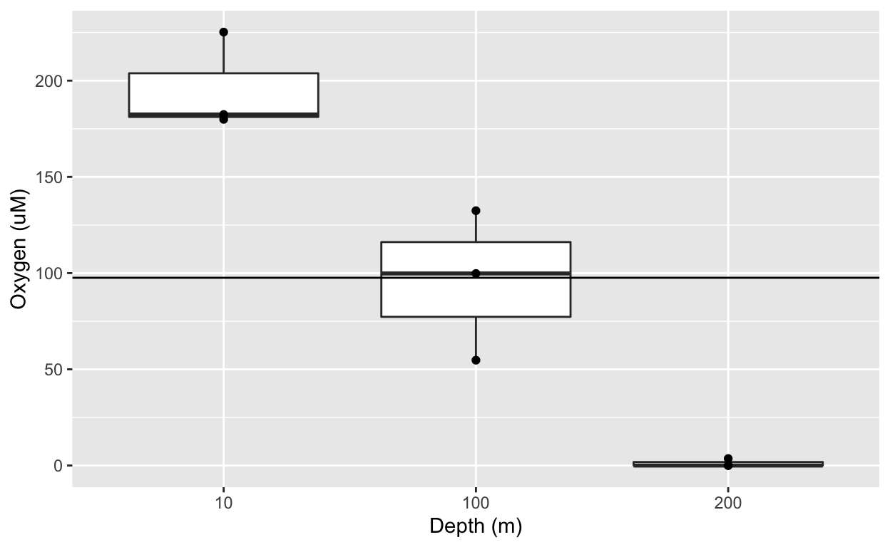
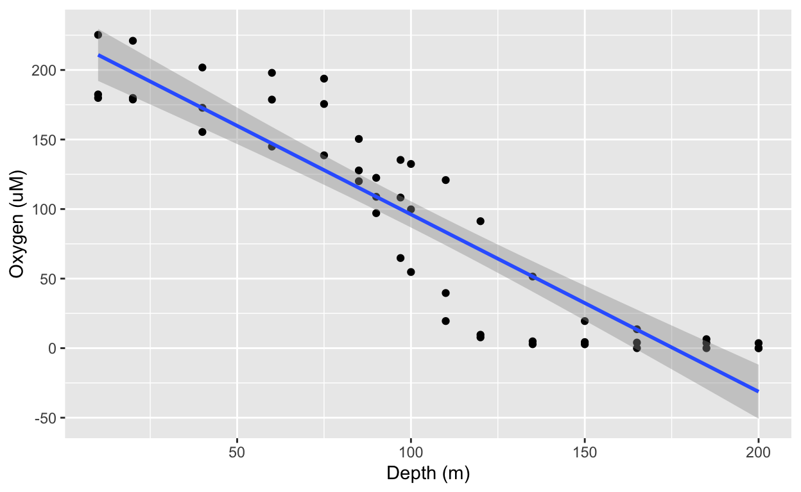
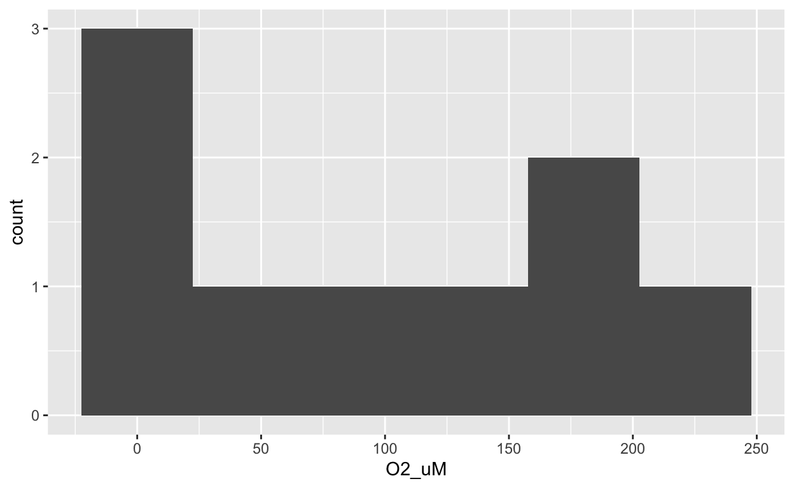
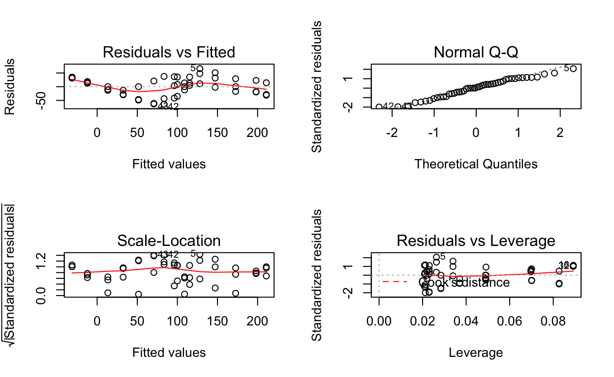
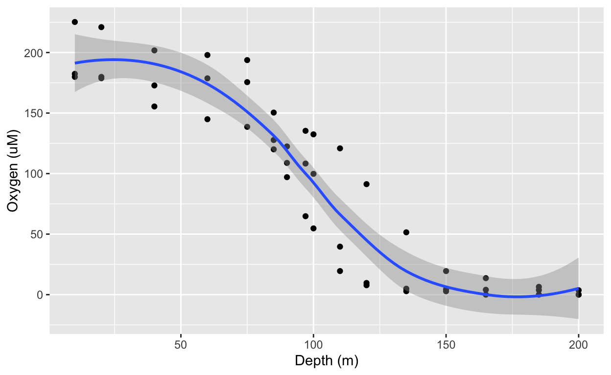

At its heart, R is statistical software. Thus, it should come as no surprise that base R allows you to perform many different statistical tests. Here, we cover:
The first step of any data science project is to examine the data you are working with. In our case, we are examining some measurements from the Saanich inlet dataset.
dim(raw_dat)## [1] 1605 29colnames(raw_dat)## [1] "Longitude" "Latitude" "Cruise" "Date" "Depth"
## [6] "WS_O2" "PO4" "SI" "WS_NO3" "Mean_NH4"
## [11] "Std_NH4" "Mean_NO2" "Std_NO2" "WS_H2S" "Std_H2S"
## [16] "Cells.ml" "Mean_N2" "Std_n2" "Mean_O2" "Std_o2"
## [21] "Mean_co2" "Std_co2" "Mean_N2O" "Std_N2O" "Mean_CH4"
## [26] "Std_CH4" "Temperature" "Salinity" "Density"We also want to remove entries with no oxygen measurements from our dataset.
dat <-
raw_dat %>%
select(Cruise, Date, Depth, Temperature,
WS_O2, WS_NO3, WS_H2S) %>%
filter(!is.na(WS_O2)) %>%
rename(O2_uM=WS_O2, NO3_uM=WS_NO3, H2S_uM=WS_H2S) %>%
mutate(Depth_m=Depth*1000)Null hypothesis H0: the two population means are equal
Alternate hypothesis H1: the two population means are not equal
\(*\) Different equations exist if these are not true
dat.ttest <- dat %>%
filter(Depth_m %in% c(10, 100) & Cruise %in% c(18,30,42)) %>%
select(Cruise, Date, Depth_m, O2_uM)dat.ttest %>%
ggplot(aes(x=as.factor(Depth_m), y=O2_uM)) +
geom_boxplot() +
geom_point() +
labs(x="Depth (m)", y="Oxygen (uM)")
t.test(O2_uM ~ as.factor(Depth_m), data = dat.ttest, var.equal=FALSE)##
## Welch Two Sample t-test
##
## data: O2_uM by as.factor(Depth_m)
## t = 3.7243, df = 3.4441, p-value = 0.02656
## alternative hypothesis: true difference in means is not equal to 0
## 95 percent confidence interval:
## 20.49653 179.89413
## sample estimates:
## mean in group 10 mean in group 100
## 195.8453 95.6500Analysis of variance (ANOVA) allows us to compare more than the 2 groups possible in a t-test. It functions very similarly to the t-test, having the same assumptions, but tests fundamentally different hypotheses. We will investigate one-way ANOVAs, meaning there is a single explanatory variable.
Null hypothesis H0: all of the population means are equal to the mean across all populations
Alternate hypothesis H1: at least one population mean is not equal to the mean across all populations
Note that this does not test which population mean is different from the overall mean.
(Same as t-test)
dat.aov <- dat %>%
filter(Depth_m %in% c(10, 100, 200) & Cruise %in% c(18,30,42)) %>%
select(Cruise, Date, Depth_m, O2_uM)dat.aov %>%
ggplot(aes(x=as.factor(Depth_m), y=O2_uM)) +
geom_boxplot() +
geom_point() +
geom_hline(aes(yintercept=mean(O2_uM))) + # Add a horizontal line for the overall mean
labs(x="Depth (m)", y="Oxygen (uM)")
The horizontal line is the overall mean across all 3 depths. It is this mean that the sample means are being compared to.
summary(aov(O2_uM ~ as.factor(Depth_m), data = dat.aov))## Df Sum Sq Mean Sq F value Pr(>F)
## as.factor(Depth_m) 2 56841 28420 39.19 0.00036 ***
## Residuals 6 4351 725
## ---
## Signif. codes: 0 '***' 0.001 '**' 0.01 '*' 0.05 '.' 0.1 ' ' 1Note that for the aov function, we need to summarize it to obtain p-values.
Linear models take it another step further by allowing us to fit a model to 2 or more continuous variables. Here, we will go over the simplest regression Y ~ X.
Null hypothesis H0: The slope of the relationship between X and Y populations is zero.
Alternate hypothesis H1: The slope of the relationship between X and Y populations is not zero.
dat.lm <- dat %>%
filter(Cruise %in% c(18,30,42)) %>%
select(Cruise, Date, Depth_m, O2_uM)dat.lm %>%
ggplot(aes(x=Depth_m, y=O2_uM)) +
geom_point() +
geom_smooth(method="lm") +
labs(x="Depth (m)", y="Oxygen (uM)")
Note how ggplot can add the linear fit (blue line) and 95% confidence intervals (grey area) with geom_smooth.
summary(lm(O2_uM ~ Depth_m, data = dat.lm))##
## Call:
## lm(formula = O2_uM ~ Depth_m, data = dat.lm)
##
## Residuals:
## Min 1Q Median 3Q Max
## -63.916 -21.495 1.964 24.448 65.751
##
## Coefficients:
## Estimate Std. Error t value Pr(>|t|)
## (Intercept) 223.59374 10.05439 22.24 <2e-16 ***
## Depth_m -1.27444 0.08679 -14.68 <2e-16 ***
## ---
## Signif. codes: 0 '***' 0.001 '**' 0.01 '*' 0.05 '.' 0.1 ' ' 1
##
## Residual standard error: 32.32 on 46 degrees of freedom
## Multiple R-squared: 0.8242, Adjusted R-squared: 0.8204
## F-statistic: 215.6 on 1 and 46 DF, p-value: < 2.2e-16In general, you can determine if your data adhere to the assumptions of a t-test or ANOVA simply by understanding where the data came from and completely a few exploratory tests like below.
ggplot(dat.aov, aes(x=O2_uM)) +
geom_histogram(bins=6)
dat.aov %>%
group_by(Depth_m) %>%
summarise(n = n(),
sd = sd(O2_uM),
variance = var(O2_uM))And we see that these data break pretty much all the assumptions. Fortunately, these were merely a subset of the full data and we know that depth is, in fact, linear so a linear model would be a better fit.
But the assumptions of a linear model mostly revolve around residuals. Thus, simple exploration of the raw data won’t help. Instead, we can view the residuals using plots like so.
# Set window to 2x2 plots
par(mfrow=c(2,2))
# Use base R to plot
plot(lm(O2_uM ~ Depth_m, data = dat.lm))
What you want to see is flat (horizontal) red fit lines and randomly distributed points (plots 1, 3, 4) as well as points mostly along the dotted fit line (plot 2).
You can also quickly test the most pertinent assumptions using the package gvlma. Remember, you will need to install this package before you can load it.
library(gvlma)
gvlma(lm(O2_uM ~ Depth_m, data = dat.lm))##
## Call:
## lm(formula = O2_uM ~ Depth_m, data = dat.lm)
##
## Coefficients:
## (Intercept) Depth_m
## 223.594 -1.274
##
##
## ASSESSMENT OF THE LINEAR MODEL ASSUMPTIONS
## USING THE GLOBAL TEST ON 4 DEGREES-OF-FREEDOM:
## Level of Significance = 0.05
##
## Call:
## gvlma(x = lm(O2_uM ~ Depth_m, data = dat.lm))
##
## Value p-value Decision
## Global Stat 2.361574 0.6696 Assumptions acceptable.
## Skewness 0.462056 0.4967 Assumptions acceptable.
## Kurtosis 0.943747 0.3313 Assumptions acceptable.
## Link Function 0.946230 0.3307 Assumptions acceptable.
## Heteroscedasticity 0.009541 0.9222 Assumptions acceptable.From these results, we can conclude that a linear model is an okay fit for oxygen by depth but likely not the best fit as there is a clear sigmodial shape in the residual vs. fitted plot. You can also see this clearly if you allow ggplot to fit a polynomial model with loess.
dat.lm %>%
ggplot(aes(x=Depth_m, y=O2_uM)) +
geom_point() +
geom_smooth(method="loess") +
labs(x="Depth (m)", y="Oxygen (uM)")
Thus, we would next test if a sigmodial model was a better fit. However, this is outside the scope of this module.
So what do you do if your data is non-normal? Or has small sample sizes? Or breaks any of the given assumptions of a statistical test?
The first thing is that you should not be using that test! There are many, many, many statistical tests for all types of data including non-normal, uneven, and/or small data sets. These, however, are also beyond the scope of this module.
When in doubt, consult a statistician! Science is increasingly collaborative and interdisciplinary so take advantage of other expertise!
R cheatsheets also available in RStudio under Help > Cheatsheets